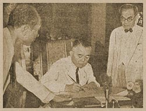

|
j
a v a s c r i p t |
February 27, 1943

Independence Manifesto Signing
Tribune: "Freedom Manifesto Calls for United Effort by All Philippines." Page 1 shows a picture of Vargas signing with De Las Alas looking on as if witnessing a murder. The Manifesto itself is published on the front page and contains language worthy of a high-school student: Long before the outbreak of the Greater East Asia War, her Imperial Government freely and unreservedly declared that she had no territorial ambition in the Philippines. This declaration the Japanese Forces reaffirmed when they occupied Manila early last year. And it goes downhill from there — probably written by the Japanese under the guidance (or misguidance, if you know what I mean) of Recto. The words benevolent, racial dignity, and honor and glory appear there — enough said. |
|
|
|
|